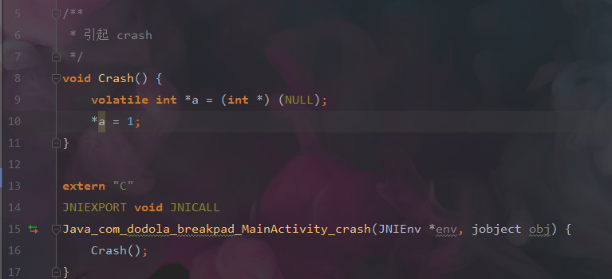
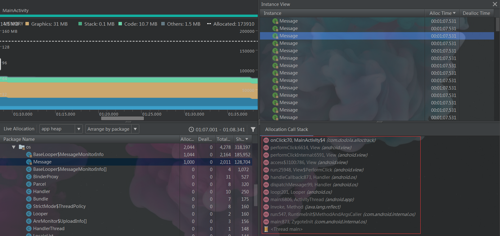
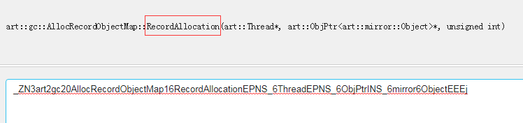
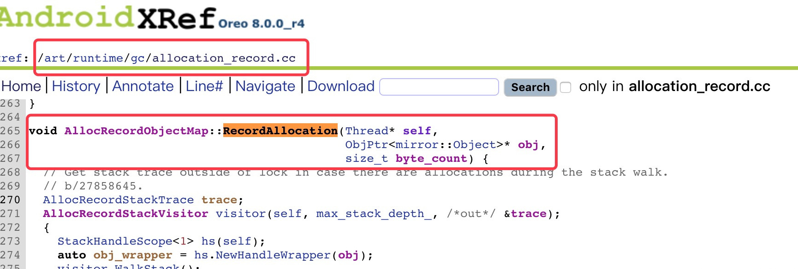
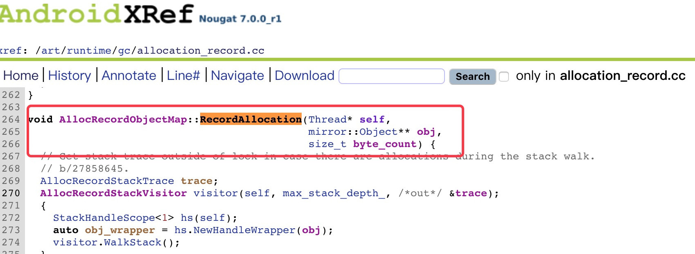
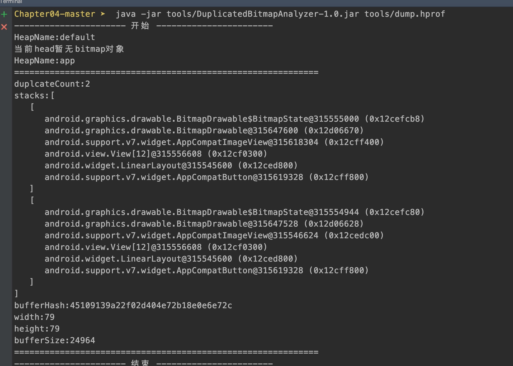
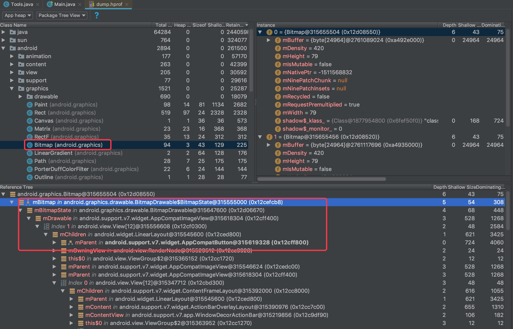

你好，我是张绍文，今天我要跟你分享唯鹿同学完成专栏课后练习作业的“手记”。专栏承诺会为坚持完成练习作业的同学送出 GMTC 大会门票，唯鹿同学通过自己的努力和坚持，为自己赢得了 GMTC 大会的门票。
如果你还没开始练习，我强烈建议你花一些时间在练习上，因为每个练习的 Sample 都是我和学习委员花费很多精力精心准备的，为的是让你在学习完后可以有机会上手实践，帮你尽快消化专栏里的知识并为自己所用。
大家好，我是唯鹿，来自西安，从事 Android 开发也有近 5 年的时间了，目前在做智慧社区方面的业务。我自己坚持写博客已经有三年多的时间了，希望分享自己在工作、学习中的收获。
先说说我学习专栏的方法，专栏更新当天我就会去学习，但是难度真的不小。我对自己的要求并不是看一遍就要搞明白，而是遇见不懂的地方立马查阅资料，要做到大体了解整篇内容。之后在周末的时候我会集中去做 Sample 练习，一边复习本周发布的内容，一边用写博客的方式记录练习的结果。
后面我计划专栏结束后再多看、多练习几遍，不断查漏补缺。说真的，我很喜欢《Android 开发高手课》的难度，让我在完成练习作业时有种翻越高山的快感。最后，希望同学们一起坚持，享受翻越高山带来的成就感。
最近在学习张绍文老师的《Android 开发高手课》。课后作业可不是一般的难，最近几天抽空练习了一下，结合老师给的步骤和其他同学的经验，完成了前 5 课的内容。
我整理总结了一下，分享出来，希望可以帮到一起学习的同学（当然希望大家尽量靠自己解决问题）。
例子里集成了 Breakpad 来获取发生 Native Crash 时候的系统信息和线程堆栈信息。通过一个简单的 Native 崩溃捕获过程，完成 minidump 文件的生成和解析，在实践中加深对 Breakpad 工作机制的认识。
直接运行项目，按照 README.md 的步骤操作就行。
中间有个问题，老师提供的 minidump_stackwalker 工具在 macOS 10.14 以上无法成功执行，因为没有 libstdc++.6.dylib 库，所以我就下载 Breakpad 源码重新编译了一遍。
使用 minidump_stackwalker 工具来根据 minidump 文件生成堆栈跟踪 log，得到的 crashLog.txt 文件如下：
Operating system: Android 0.0.0 Linux 4.9.112-perf-gb92eddd #1 SMP PREEMPT Tue Jan 1 21:35:06 CST 2019 aarch64CPU: arm64 // 注意点 1 8 CPUs GPU: UNKNOWN Crash reason: SIGSEGV /SEGV_MAPERRCrash address: 0x0Process uptime: not available Thread 0 (crashed) 0 libcrash-lib.so + 0x600 // 注意点 2 x0 = 0x00000078e0ce8460 x1 = 0x0000007fd4000314 x2 = 0x0000007fd40003b0 x3 = 0x00000078e0237134 x4 = 0x0000007fd40005d0 x5 = 0x00000078dca14200 x6 = 0x0000007fd4000160 x7 = 0x00000078c8987e18 x8 = 0x0000000000000000 x9 = 0x0000000000000001 x10 = 0x0000000000430000 x11 = 0x00000078e05ef688 x12 = 0x00000079664ab050 x13 = 0x0ad046ab5a65bfdf x14 = 0x000000796650c000 x15 = 0xffffffffffffffff x16 = 0x00000078c83defe8 x17 = 0x00000078c83ce5ec x18 = 0x0000000000000001 x19 = 0x00000078e0c14c00 x20 = 0x0000000000000000 x21 = 0x00000078e0c14c00 x22 = 0x0000007fd40005e0 x23 = 0x00000078c89fa661 x24 = 0x0000000000000004 x25 = 0x00000079666cc5e0 x26 = 0x00000078e0c14ca0 x27 = 0x0000000000000001 x28 = 0x0000007fd4000310 fp = 0x0000007fd40002e0 lr = 0x00000078c83ce624 sp = 0x0000007fd40002c0 pc = 0x00000078c83ce600 Found by: given as instruction pointer in context 1 libcrash-lib.so + 0x620 fp = 0x0000007fd4000310 lr = 0x00000078e051c7e4 sp = 0x0000007fd40002f0 pc = 0x00000078c83ce624 Found by: previous frame's frame pointer 2 libart.so + 0x55f7e0 fp = 0x130c0cf800000001 lr = 0x00000079666cc5e0 sp = 0x0000007fd4000320 pc = 0x00000078e051c7e4 Found by: previous frame's frame pointer......下来是符号解析，可以使用 NDK 中提供的addr2line来根据地址进行一个符号反解的过程，该工具在$NDK_HOME/toolchains/arm-linux-androideabi-4.9/prebuilt/darwin-x86_64/bin/arm-linux-androideabi-addr2line。
注意：此处要注意一下平台，如果是 ARM 64 位的 so，解析是需要使用 aarch64-linux-android-4.9 下的工具链。
因为我的是 ARM 64 位的 so。所以使用 aarch64-linux-android-4.9，libcrash-lib.so 在app/build/intermediates/cmake/debug/obj/arm64-v8a下，0x600为错误位置符号。
aarch64-linux-android-addr2line -f -C -e libcrash-lib.so 0x600输出结果如下：
Crash()/Users/weilu/Downloads/Chapter01-master/sample/.externalNativeBuild/cmake/debug/arm64-v8a/../../../../src/main/cpp/crash.cpp:10可以看到输出结果与下图错误位置一致（第 10 行）。

该例子主要演示了如何通过关闭 FinalizerWatchdogDaemon 来减少 TimeoutException 的触发。
在我的上一篇博客：安卓开发中遇到的奇奇怪怪的问题（三）中有说明，就不重复赘述了。
项目使用了 Inline Hook 来拦截内存对象分配时候的 RecordAllocation 函数，通过拦截该接口可以快速获取到当时分配对象的类名和分配的内存大小。
在初始化的时候我们设置了一个分配对象数量的最大值，如果从 start 开始对象分配数量超过最大值就会触发内存 dump，然后清空 alloc 对象列表，重新计算。该功能和 Android Studio 里的 Allocation Tracker 类似，只不过可以在代码级别更细粒度的进行控制。可以精确到方法级别。
项目直接跑起来后，点击开始记录，然后点击 5 次生成 1000 对象按钮。生成对象代码如下：
for (int i = 0; i < 1000; i++) { Message msg = new Message(); msg.what = i;}因为代码从点击开始记录开始，触发到 5000 的数据就 dump 到文件中，点击 5 次后就会在sdcard/crashDump下生成一个时间戳命名的文件。项目根目录下调用命令：
java -jar tools/DumpPrinter-1.0.jar dump 文件路径 > dump_log.txt然后就可以在 dump_log.txt 中看到解析出来的数据：
Found 5000 records:....tid=4509 android.graphics.drawable.RippleForeground (112 bytes) android.graphics.drawable.RippleDrawable.tryRippleEnter (RippleDrawable.java:569) android.graphics.drawable.RippleDrawable.setRippleActive (RippleDrawable.java:276) android.graphics.drawable.RippleDrawable.onStateChange (RippleDrawable.java:266) android.graphics.drawable.Drawable.setState (Drawable.java:778) android.view.View.drawableStateChanged (View.java:21137) android.widget.TextView.drawableStateChanged (TextView.java:5289) android.support.v7.widget.AppCompatButton.drawableStateChanged (AppCompatButton.java:155) android.view.View.refreshDrawableState (View.java:21214) android.view.View.setPressed (View.java:10583) android.view.View.setPressed (View.java:10561) android.view.View.onTouchEvent (View.java:13865) android.widget.TextView.onTouchEvent (TextView.java:10070) android.view.View.dispatchTouchEvent (View.java:12533) android.view.ViewGroup.dispatchTransformedTouchEvent (ViewGroup.java:3032) android.view.ViewGroup.dispatchTouchEvent (ViewGroup.java:2662) android.view.ViewGroup.dispatchTransformedTouchEvent (ViewGroup.java:3032)tid=4515 int[] (104 bytes)tid=4509 android.os.BaseLooper$MessageMonitorInfo (88 bytes) android.os.Message.<init> (Message.java:123) com.dodola.alloctrack.MainActivity$4.onClick (MainActivity.java:70) android.view.View.performClick (View.java:6614) android.view.View.performClickInternal (View.java:6591) android.view.View.access$3100 (View.java:786) android.view.View$PerformClick.run (View.java:25948) android.os.Handler.handleCallback (Handler.java:873) android.os.Handler.dispatchMessage (Handler.java:99) android.os.Looper.loop (Looper.java:201) android.app.ActivityThread.main (ActivityThread.java:6806) java.lang.reflect.Method.invoke (Native method) com.android.internal.os.RuntimeInit$MethodAndArgsCaller.run (RuntimeInit.java:547) com.android.internal.os.ZygoteInit.main (ZygoteInit.java:873)......我们用 Android Profiler 查找一个 Message 对象对比一下，一模一样。

简单看一下 Hook 代码：
void hookFunc() { LOGI("start hookFunc"); void *handle = ndk_dlopen("libart.so", RTLD_LAZY | RTLD_GLOBAL); if (!handle) { LOGE("libart.so open fail"); return; } void *hookRecordAllocation26 = ndk_dlsym(handle, "_ZN3art2gc20AllocRecordObjectMap16RecordAllocationEPNS_6ThreadEPNS_6ObjPtrINS_6mirror6ObjectEEEj"); void *hookRecordAllocation24 = ndk_dlsym(handle, "_ZN3art2gc20AllocRecordObjectMap16RecordAllocationEPNS_6ThreadEPPNS_6mirror6ObjectEj"); void *hookRecordAllocation23 = ndk_dlsym(handle, "_ZN3art3Dbg16RecordAllocationEPNS_6ThreadEPNS_6mirror5ClassEj"); void *hookRecordAllocation22 = ndk_dlsym(handle, "_ZN3art3Dbg16RecordAllocationEPNS_6mirror5ClassEj"); if (hookRecordAllocation26 != nullptr) { LOGI("Finish get symbol26"); MSHookFunction(hookRecordAllocation26, (void *) &newArtRecordAllocation26, (void **) &oldArtRecordAllocation26); } else if (hookRecordAllocation24 != nullptr) { LOGI("Finish get symbol24"); MSHookFunction(hookRecordAllocation26, (void *) &newArtRecordAllocation26, (void **) &oldArtRecordAllocation26); } else if (hookRecordAllocation23 != NULL) { LOGI("Finish get symbol23"); MSHookFunction(hookRecordAllocation23, (void *) &newArtRecordAllocation23, (void **) &oldArtRecordAllocation23); } else { LOGI("Finish get symbol22"); if (hookRecordAllocation22 == NULL) { LOGI("error find hookRecordAllocation22"); return; } else { MSHookFunction(hookRecordAllocation22, (void *) &newArtRecordAllocation22, (void **) &oldArtRecordAllocation22); } } dlclose(handle);}使用了 Inline Hook 方案 Substrate 来拦截内存对象分配时候 libart.so 的 RecordAllocation 函数。首先如果我们要 hook 一个函数，需要知道这个函数的地址。我们也看到了代码中这个地址判断了四种不同系统。这里有一个网页版的解析工具可以快速获取。下面以 8.0 为例。

我在 8.0 的源码中找到了对应的方法：

7.0 方法就明显不同：

我也同时参看了 9.0 的代码，发现没有变化，所以我的测试机是 9.0 的也没有问题。
Hook 新内存对象分配处理代码：
static bool newArtRecordAllocationDoing24(Class *type, size_t byte_count) { allocObjectCount++; // 根据 class 获取类名 char *typeName = GetDescriptor(type, &a); // 达到 max if (allocObjectCount > setAllocRecordMax) { CMyLock lock(g_Lock);// 此处需要 loc 因为对象分配的时候不知道在哪个线程，不 lock 会导致重复 dump allocObjectCount = 0; // dump alloc 里的对象转换成 byte 数据 jbyteArray allocData = getARTAllocationData(); // 将 alloc 数据写入文件 SaveAllocationData saveData{allocData}; saveARTAllocationData(saveData); resetARTAllocRecord(); LOGI("===========CLEAR ALLOC MAPS============="); lock.Unlock(); } return true;}通过分析内存文件 hprof 快速判断内存中是否存在重复的图片，并且将这些重复图片的 PNG、堆栈等信息输出。
首先是获取我们需要分析的 hprof 文件，我们加载两张相同的图片：
Bitmap bitmap1 = BitmapFactory.decodeResource(getResources(), R.mipmap.test); Bitmap bitmap2 = BitmapFactory.decodeResource(getResources(), R.mipmap.test); imageView1.setImageBitmap(bitmap1); imageView2.setImageBitmap(bitmap2);生成 hprof 文件
// 手动触发 GC Runtime.getRuntime().gc(); System.runFinalization(); Debug.dumpHprofData(file.getAbsolutePath());接下来就是利用HAHA 库进行文件分析的核心代码：
// 打开 hprof 文件final HeapSnapshot heapSnapshot = new HeapSnapshot(hprofFile);// 获得 snapshotfinal Snapshot snapshot = heapSnapshot.getSnapshot();// 获得 Bitmap Classfinal ClassObj bitmapClass = snapshot.findClass("android.graphics.Bitmap");// 获得 heap, 只需要分析 app 和 default heap 即可Collection<Heap> heaps = snapshot.getHeaps(); for (Heap heap : heaps) { // 只需要分析 app 和 default heap 即可 if (!heap.getName().equals("app") && !heap.getName().equals("default")) { continue; } for (ClassObj clazz : bitmapClasses) { // 从 heap 中获得所有的 Bitmap 实例 List<Instance> bitmapInstances = clazz.getHeapInstances(heap.getId()); // 从 Bitmap 实例中获得 buffer 数组, 宽高信息等。 ArrayInstance buffer = HahaHelper.fieldValue(((ClassInstance) bitmapInstance).getValues(), "mBuffer"); int bitmapHeight = fieldValue(bitmapInstance, "mHeight"); int bitmapWidth = fieldValue(bitmapInstance, "mWidth"); // 引用链信息 while (bitmapInstance.getNextInstanceToGcRoot() != null) { print(instance.getNextInstanceToGcRoot()); instance = instance.getNextInstanceToGcRoot(); } // 根据 hashcode 来进行重复判断 }}最终的输出结果：

我们用 Studio 打开 hprof 文件对比一下：

可以看到信息是一摸一样的。对于更优处理引用链的信息，可以参看LeakCanary源码的实现。
我已经将上面的代码打成 JAR 包，可以直接调用：
// 调用方法：java -jar tools/DuplicatedBitmapAnalyzer-1.0.jar hprof 文件路径详细的代码我提交到了Github，供大家参考。
尝试模仿ProcessCpuTracker.java拿到一段时间内各个线程的耗时占比。
usage: CPU usage 5000ms(from 23:23:33.000 to 23:23:38.000): System TOTAL: 2.1% user + 16% kernel + 9.2% iowait + 0.2% irq + 0.1% softirq + 72% idle CPU Core: 8 Load Average: 8.74 / 7.74 / 7.36 Process:com.sample.app 50% 23468/com.sample.app(S): 11% user + 38% kernel faults:4965 Threads: 43% 23493/singleThread(R): 6.5% user + 36% kernel faults：3094 3.2% 23485/RenderThread(S): 2.1% user + 1% kernel faults：329 0.3% 23468/.sample.app(S): 0.3% user + 0% kernel faults：6 0.3% 23479/HeapTaskDaemon(S): 0.3% user + 0% kernel faults：982 ...因为了解 Linux 不多，所以看这个有点懵逼。好在课代表孙鹏飞同学解答了相关问题，看懂了上面信息，同时学习到了一些 Linux 知识。
private void testIO() { Thread thread = new Thread(new Runnable() { @Override public void run() { File f = new File(getFilesDir(), "aee.txt"); FileOutputStream fos = new FileOutputStream(f); byte[] data = new byte[1024 * 4 * 3000];// 此处分配一个 12mb 大小的 byte 数组 for (int i = 0; i < 30; i++) {// 由于 IO cache 机制的原因所以此处写入多次 cache，触发 dirty writeback 到磁盘中 Arrays.fill(data, (byte) i);// 当执行到此处的时候产生 minor fault，并且产生 User cpu useage fos.write(data); } fos.flush(); fos.close(); } }); thread.setName("SingleThread"); thread.start(); }上述代码就是导致的问题罪魁祸首，这种密集 I/O 操作集中在 SingleThread 线程中处理，导致发生了 3094 次 faults、36% kernel，完全没有很好利用到 8 核 CPU。
最后，通过检测 CPU 的使用率，可以更好地避免卡顿现象，防止 ANR 的发生。
前前后后用了两三天的时间，远远没有当初想的顺利，感觉身体被掏空。中间也爬了不少坑，虽然没有太深入实现代码，但是中间的体验过程也是收获不小。所以总不能因为难就放弃了，先做到力所能及的部分，让自己动起来！
参考
COMMUNITY NOTES
读者评论
优秀
优秀
同学太优秀啦，赞
优秀
同学优秀。
张老师您好，关于chapter01练习，我想自己手动去编译一下breakpad按照您的教程，不过在clone depot_tools的时候，出现了failed to connect 443，搜索后使用了很多可能的办法，好像都不行，还望您指教，谢谢
优秀，要向你学习